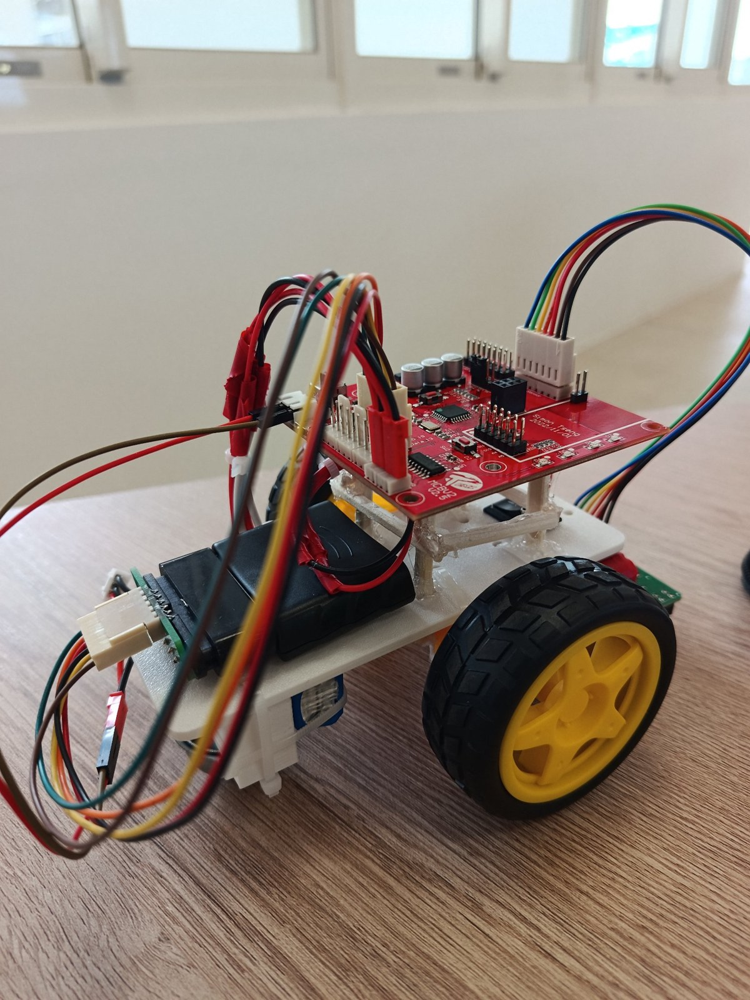

{{r.v}}
{{t.tag}}
STARNING
{{t.status}}
TIRT {{t.titleSub}}
{{t.intro}}
RACE DAY
11.07
{{t.eventK}}
{{t.eventV}}
{{t.heroResK}}
{{t.heroResV}}
{{t.firstK}}
{{t.firstV}}
{{t.specK}}
{{sp.k}}{{sp.v}}
01 · {{t.taskK}}
{{t.taskH}}
{{t.taskP}}
02 · {{t.teamK}}
{{m.name}}{{m.sub}}
{{r.k}}
03 · {{t.prepK}}
{{t.prepH}}
-
{{g.n}}
{{g.h}}{{g.en}}
{{t.wip}} {{g.p}}
{{ph.step}} {{ph.cap}} {{t.photoTodo}}
04 · {{t.hardK}}
{{t.hardH}}
?
{{h.q}}
{{h.a}}
{{t.hardWrap}}
05 · {{t.diaryK}}
{{t.diaryH}}
{{t.diaryLead}}
- {{ds.v}}
- {{ds.k}}
{{t.ganttK}}{{t.ganttHint}}
{{gr.n}}{{gr.k}}
-
{{ph.n}}LAP {{ph.n}} {{ph.date}}
{{ph.k}}
{{ph.countLabel}}- #{{it.n}}{{it.q}} {{it.a}}
-
VI
-
FINISH 11.07 {{t.finishK}}
06 · {{t.logK}}
10.31–11.03{{t.logH}}
{{t.logLead}}
{{grp.n}}
{{grp.note}}
{{grp.k}}
{{it.n}}{{it.q}}
{{it.status}}
- {{r.k}}
- {{r.v}}
{{t.failK}}
{{t.failH}}
{{t.failLead}}
-
{{f.n}}
{{f.what}} {{t.failWhy}}{{f.why}} {{f.status}}{{f.now}}
{{t.planK}}
- STEP {{pl.n}}{{pl.k}}{{pl.d}}
{{t.nextUpK}}
- ✓{{x.v}}
{{t.learnK}}
- {{l.n}}{{l.v}}
07 · {{t.resultK}}
{{t.carH}}

{{t.carP}}
- {{cp.k}}
- {{cp.v}}
{{t.resultH}}
{{t.resultBig}}
{{t.resultP}}
- {{ri.n}}{{ri.v}}
{{t.dayK}}
{{t.dayH}}
- {{rd.cap}}
REFLECTION
{{rf.title}}
{{rf.lead}}